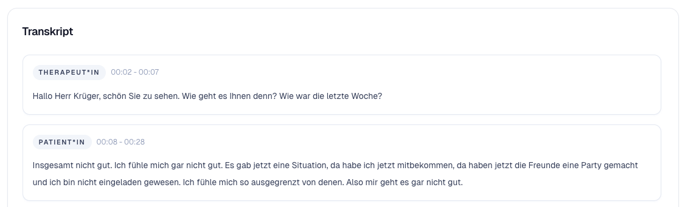
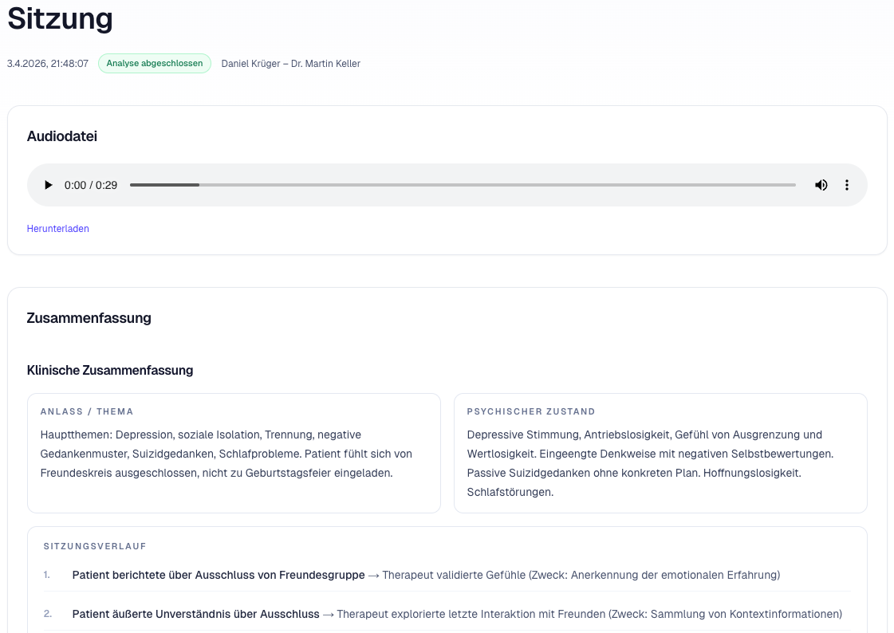
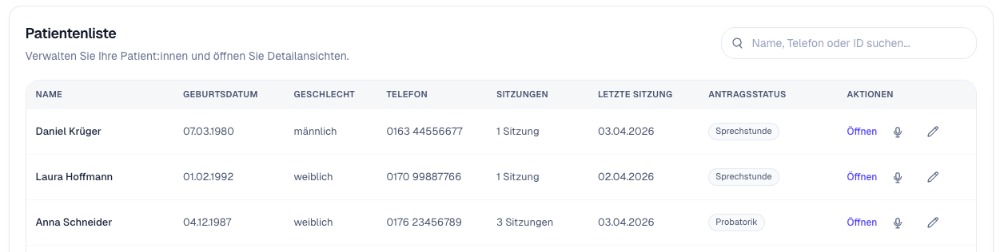

TheraDocs
TheraDocs
Patienten & Sitzungen
Verwalten Sie Patient:innen, Sitzungen und letzte Aktivitäten zentral an einem Ort.
Transkript, strukturierte Zusammenfassung und Sitzungsverlauf werden automatisch aus der Sitzung generiert und können direkt überprüft und weiterverarbeitet werden.



TheraDocs verbindet Patientenverwaltung, Transkript, Zusammenfassung und Sitzungsverlauf in einem zusammenhängenden Ablauf.
Die Module zeigen, wie Patientenverwaltung, Transkript, Analyse und Dokumentation in TheraDocs zusammenarbeiten.
Verwalten Sie Patient:innen, Sitzungen und letzte Aktivitäten zentral an einem Ort.
Gespräche werden automatisch transkribiert und Sprecherrollen klar zugeordnet.
TheraDocs erkennt klinisch relevante Inhalte und strukturiert sie für die weitere Dokumentation.
Wesentliche Inhalte der Sitzung werden kompakt und manuell editierbar dargestellt. Zusätzlich erstellt TheraDocs automatisiert strukturierte Analysen, z. B. SORC-Schemata oder Einschätzungen zur Suizidalität.
Sitzungszusammenfassungen werden chronologisch archiviert und sind über die Suche jederzeit abrufbar. So entsteht eine feingranulare Verlaufsanalyse über die gesamte Therapie hinweg und bildet die Grundlage für weiterführende Dokumente wie Therapieanträge.
TheraDocs folgt einem klaren Ablauf: Sitzung öffnen, Verarbeitung im Hintergrund, Ergebnisse prüfen, bearbeiten und direkt weiterverwenden.
Eine Sitzung wird aufgenommen oder als Audiodatei hochgeladen und automatisch verarbeitet.
TheraDocs verarbeitet das Gespräch und erstellt Transkript, Zusammenfassung und Verlauf.
Die Ergebnisse erscheinen direkt und können sofort geprüft und weiterbearbeitet werden.

TheraDocs verarbeitet hochsensible Gesprächsdaten und ist auf sichere Verarbeitung und kontrollierten Zugriff ausgelegt.
TheraDocs ist ein Produkt der Sumora UG (haftungsbeschränkt).
E-Mail: info@theradocs.com